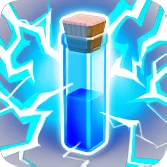

Lightning Spell — Clash of Clans
Updated: 26 August 2026 · By the Goblins Farm team
Lightning deals damage to whatever is in a small radius. Unlike every other spell it does not help your troops, it simply destroys something itself, which makes it the tool for removing one specific building before the attack begins.
- Levels
- 13
- Housing space
- 1
- Radius
- 2 tiles
- Role
- Elixir spell, direct damage
What it does
It strikes a small area for direct damage. Because the radius is tight and the damage is fixed, its use is arithmetic: can enough Lightning kill the building you need dead, and is that worth the spell space?
The classic use
Removing an Air Defence before an air attack. A Dragon or Balloon army lives or dies on anti-air, so spending spell slots to delete one Air Defence outright frequently pays for itself several times over.
- Check the arithmetic first. A partially damaged Air Defence still shoots. If you cannot kill it, do not start.
- Consider pairing with Earthquake, which softens a building so fewer Lightning are needed.
- Use it before deploying, so the survivors of your army never meet that defence at all.
Other uses
Lightning is also used to clear a defending Clan Castle when a lure is impractical, and to finish a stubborn building at the end of an attack when a single structure is standing between you and another star. Both are legitimate, and both are situational rather than default.
Stats by level
| Level | Research cost | Research time | Town Hall |
|---|---|---|---|
| 1 | — | — | 3 |
| 2 | 50,000 Elixir | 2 h | 3 |
| 3 | 100,000 Elixir | 4 h | 4 |
| 4 | 200,000 Elixir | 6 h | 5 |
| 5 | 600,000 Elixir | 1 d | 8 |
| 6 | 1,500,000 Elixir | 1 d 12 h | 9 |
| 7 | 2,500,000 Elixir | 3 d | 10 |
| 8 | 4,200,000 Elixir | 3 d 12 h | 11 |
| 9 | 6,300,000 Elixir | 5 d | 12 |
| 10 | 10,000,000 Elixir | 6 d | 15 |
| 11 | 13,500,000 Elixir | 7 d | 16 |
| 12 | 18,500,000 Elixir | 10 d | 17 |
| 13 | 27,000,000 Elixir | 14 d | 18 |

Where these numbers come from. Read from Clash of Clans' own game files, client build 18.400.21. They are exact for that build and do not reflect anything released after it, so verify in game before committing an upgrade.
Game values are read from Supercell's own game files, reproduced as fan content under Supercell's Fan Content Policy. Goblins Farm is not affiliated with, endorsed, sponsored, or specifically approved by Supercell, and Supercell is not responsible for it.
 Frequently asked
Frequently asked
How many Lightning Spells does it take to destroy an Air Defence?
It depends on the levels of both the spell and the defence, so check the numbers before committing, since a partially damaged Air Defence still fires. If you cannot remove it outright, the spell space is better spent elsewhere.
Is Lightning worth using?
When it removes a specific building that would otherwise end your attack, most often an Air Defence before an air army goes in, yes. As general damage it is poor value compared with spells that make your whole army better.
 Keep reading
Keep reading
Goblins Farm is not affiliated with, endorsed by, sponsored by, or specifically approved by Supercell. Clash of Clans is a trademark of Supercell Oy. This material is unofficial fan content produced under Supercell's Fan Content Policy. Game values change with every update; always verify in-game before committing an upgrade.